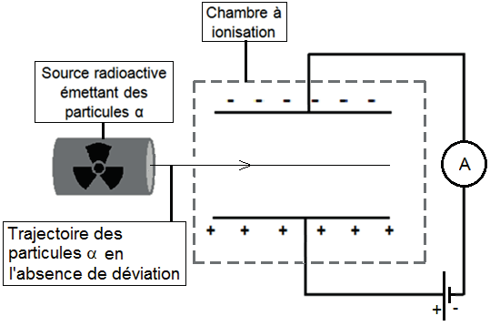
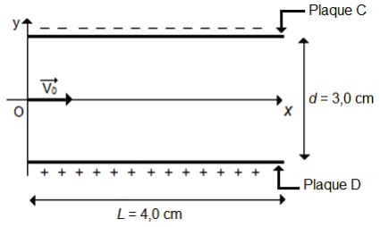

Le principe de ce détecteur de fumées repose sur l’ionisation de
l’air par des particules \(\alpha\). En
l’absence de fumées, ces particules arrachent des électrons aux
molécules de dioxygène et de diazote présentes dans la chambre à
ionisation. Pour le dioxygène, l’ionisation nécessite un apport
d’énergie de 12 eV par molécule.
Les ions et les électrons formés par l’ionisation de l’air sont soumis à
un champ électrique uniforme entre deux plaques. Un courant électrique
de faible intensité apparaît alors dans le circuit électrique (Figure 1).
Lorsque la fumée pénètre dans la chambre à ionisation, une partie des
électrons et des ions issus de l’ionisation se fixe aux poussières de
fumées. La baisse de l’intensité électrique qui en résulte déclenche un
avertisseur sonore.

On s’intéresse au mouvement d’une particule \(\alpha\) arrivant dans la chambre à
ionisation en l’absence de fumée. Cette particule arrive en un point
\(O\) avec un vecteur vitesse initiale
parallèle aux plaques \(C\) et \(D\) du condensateur plan (voir Figure 2).
Une tension constante \(U =
\SI{9,0}{V}\) est appliquée entre les deux plaques \(C\) et \(D\). La valeur de la vitesse initiale \(v_O\) est égale à
1,6E7 m s−1.
On étudie le mouvement de la particule \(\alpha\) dans le référentiel terrestre
supposé galiléen. À l’instant \(t =
0\), la particule \(\alpha\) est
au point O.
Lors de cette étude, on négligera les éventuelles collisions avec les
molécules de l’air ainsi que la valeur du poids de la particule \(\alpha\) devant la valeur de la force
électrique \(\vv{F_e}\) subie par cette
particule.

Données :
1 électronvolt (eV) = 1,5E-19 J
charge élémentaire : \(e=\SI{1,6E-19}{C}\)
Pour un condensateur plan, le champ électronique \(E\) est relié à la tension \(u\) à à la distance \(d\) qui sépare les deux plaques par la relation \(E=\dfrac{U}{d}\)
Charge de la particule \(\alpha\) : \(q_{\alpha} = + 2 e\)
Masse d’une particule \(\alpha\) : \(m_{\alpha} = \SI{6,64E-27}{kg}\)
Intensité du champ de pesanteur terrestre : \(g = \SI{9,81}{\meter\per\second}\)
Vérifier par le calcul que l’hypothèse concernant le poids de la particule \(\alpha\) est justifiée.
Reproduire sur la copie le schéma de la figure 1 puis y représenter le champ électrostatique \(\vv{E}\) et la force électrique que subit la particule \(\alpha\) au point \(O\). Justifier.
Établir que les équations horaires du mouvement de la particule \(\alpha\) sont : \[x(t)=v_0 \cdot t\] \[y(t)= \dfrac{e\cdot U}{m_{\alpha}\cdot d}\cdot t^2\]
Déterminer la valeur de la coordonnée \(y_L\) de la particule lorsqu’elle a parcouru une distance suivant l’axe \(Ox\) égale à \(L = \SI{4,0}{cm}\). Expliquer pourquoi le mouvement de cette particule peut être considérée comme rectiligne dans la chambre d’ionisation.
Montrer que l’énergie cinétique initiale des particules \(\alpha\) est suffisante pour ioniser des molécules de dioxygène.
On se propose d’étudier la cinétique de la transformation lente de
décomposition de l’eau oxygénée par les ions iodure en présence d’acide
sulfurique, transformation considérée comme totale.
L’équation de la réaction qui modélise la transformation
d’oxydoréduction s’écrit : \[\ce{H2O2(aq) + 2
I-(aq) + 2 H+(aq) <=> I2(aq) + 2H2O(l)}\]
La solution de diiode formée étant colorée, la transformation est suivie par spectrophotométrie, méthode qui consiste à mesurer l’absorbance A de la solution, grandeur proportionnelle à la concentration en diiode.
Identifier, dans l’équation de la réaction étudiée, les deux couples d’oxydoréduction mis en jeu en écrivant leurs demi-équations correspondantes. Justifier l’écriture de l’équation de la réaction.
À la date \(t\)= 0 s, on mélange un
volume \(V_1\) = 20.0 mL d’une solution
d’iodure de potassium ( ; ) de concentration \(C_1\) = 2.0 mL d’eau oxygénée de
concentration \(C_2\) =
0.10 mol L−1.
On remplit une cuve de spectrophotométrie et on relève les valeurs de
l’absorbance au cours du temps. On détermine alors, grâce à la loi de
Beer-Lambert, la concentration en quantité de matière [] du diiode formé
:
| t (s) | 0 | 126 | 434 | 682 | 930 | 1178 | 1420 |
|---|---|---|---|---|---|---|---|
| (mmol L−1) | 0,00 | 1,74 | 4,06 | 5,16 | 5,84 | 6,26 | 6,53 |
Justifier l’utilisation du spectrophotomètre pour le suivi cinétique de la réaction.
Rappeler la relation entre l’absorbance \(A\) et la concentration en quantité de matière [] de l’espèce colorée.
Le mélange initial est-il dans les proportions sotœchiométriques ? Justifier la réponse par des calculs.
Compléter le tableau d’avancement de la transformation et justifier les calculs de \(n_1\) et \(n_2\).
| État du système | Avancement (mol) | |||||
| État initial | \(n_2\) = 2.0 × 10−4 | \(n_1\) = 20 × 10−4 | Excès | Beaucoup | ||
| État en cours de transformation | \(x\) | Excès | Beaucoup | |||
| État final | \(x_{max}\) | Excès | Beaucoup |
Déterminer l’avancement maximal. En déduire la valeur théorique de la concentration en diiode formé lorsque la transformation est terminée. Cette concentration est-elle en accord avec le tableau de mesures ?
À l’aide d’un tableur, on calcule la concentration et la vitesse de
disparition de l’eau oxygénée au cours du temps. Une capture d’écran est
donnée ci-dessous.
Donner la définition du temps de demi-réaction dans le cas
étudié, puis déterminer graphiquement \(t_{1/2}\) à l’aide de la courbe de
l’évolution de la concentration en eau oxygénée au cours du temps
ci-après.

Retrouver par un calcul, la vitesse de disparition de à \(t\) = 434 s.
On trace ensuite la courbe donnant la vitesse de disparition \(v_D\) de l’eau oxygénée en fonction de sa
concentration.

Expliquer pourquoi cette transformation chimique suit une loi de vitesse d’ordre 1.
La modélisation de la concentration en eau oxygénée au cours du temps est donnée par la relation \[[\ce{H2O2}](t) = [\ce{H2O2}]_0 \cdot e^{-kt}\] À l’aide de cette relation et du tableau de mesures, déterminer []\(_0\), concentration initiale en eau oxygénée.
Retrouver cette valeur par le calcul.
Déterminer \(k\) la constante de vitesse en utilisant la droite donnant la vitesse de disparition \(v_D\) de l’eau oxygénée en fonction de sa concentration.